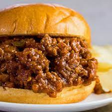

This recipe tells you step by step, exactly how to create the perfect sloppy joe that you will love.
For this recipe you will need:
- 1 pound lean ground beef
- 1/4 cup chopped onion
- 1/4 cup chopped green bell pepper
- 3/4 cup ketchup, or to taste
- 1 tablespoon brown sugar, or to taste
- 1 teaspoon yellow mustard, or to taste
- 1/2 teaspoon garlic powder
- salt and ground black pepper to taste
- 6 hamburger buns, split
Directions:
- Heat a large skillet over medium heat.
- Cook and stir lean ground beef in the hot skillet until some of the fat starts to render, 3 to 4 minutes.
- Add onion and bell pepper; continue to cook until vegetables have softened and beef is cooked through, 3 to 5 more minutes.
- Stir in ketchup, brown sugar, mustard, and garlic powder; season with salt and pepper.
- Reduce heat to low and simmer for 20 to 30 minutes.
- Take out the meat and divide it evenly on your hamburger buns.